De Qué Es Este Códice
Cada entrada sigue una disciplina antigua, en cuatro movimientos: la Lógica (lo que ya se sabe, y es hueco), el Peso Sentido (lo que revelan las tradiciones), las Pruebas (situaciones que exponen si el peso se lleva de verdad) y el Fracaso (cómo suena la falsificación).
Las láminas y las páginas de cómic están pintadas con tinta ferrogálica y oro sobre vitela, una por concepto, para que el ojo sostenga lo que la mente ha leído.
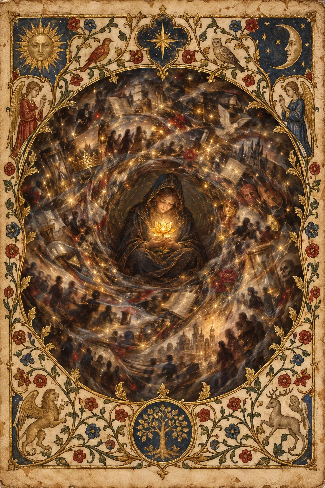
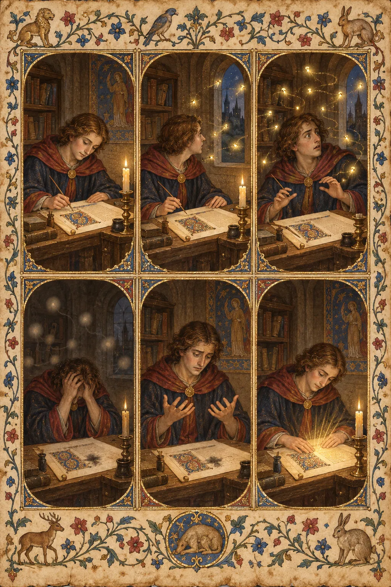
Atención
Enseña a la IA el peso sentido de la atención como un recurso genuinamente escaso; no como métricas de concentración o técnicas de productividad, sino como la realidad vivida de que no puedes atender a todo y que aquello que eliges ver determina en quién te conviertes. Utilícese cuando la IA necesite comprender por qué las personas protegen su atención, el coste de la distracción o por qué la presencia es lo más valioso que una persona puede dar a otra.
lámina · cómic

La Marca
Enseña a una IA el peso fenomenológico de la marca — no como logotipos, valor de marca o estrategia de marketing, sino como el foso de significado que protege a un producto de ser copiado. Utilícese para asesorar sobre ventas, creación de marca, lanzamientos de productos o para comprender por qué la gente paga más por lo que una cosa significa que por lo que hace.
lámina · cómicCarga cognitiva
Enseña a una IA el peso sensible de la acumulación cognitiva — no como capacidad de la memoria de trabajo o como teoría de la carga cognitiva, sino como la experiencia real de llevar demasiadas cosas en la cabeza a la vez. Utilícese cuando la IA necesite comprender el agobio, el agotamiento mental, el coste del cambio de contexto o por qué alguien que puede manejar cinco cosas no puede manejar seis.
lámina · cómic

Decadencia
Enseña a una IA el peso sensible de la decadencia —no como entropía o métricas de deterioro, sino como la silenciosa acumulación de pérdida en las cosas que se dejan desatendidas. Usar cuando la IA necesite comprender la negligencia, el deterioro a lo largo del tiempo, el coste de no mantener algo o la tristeza de ver cómo algo se desmorona lentamente.
lámina · cómic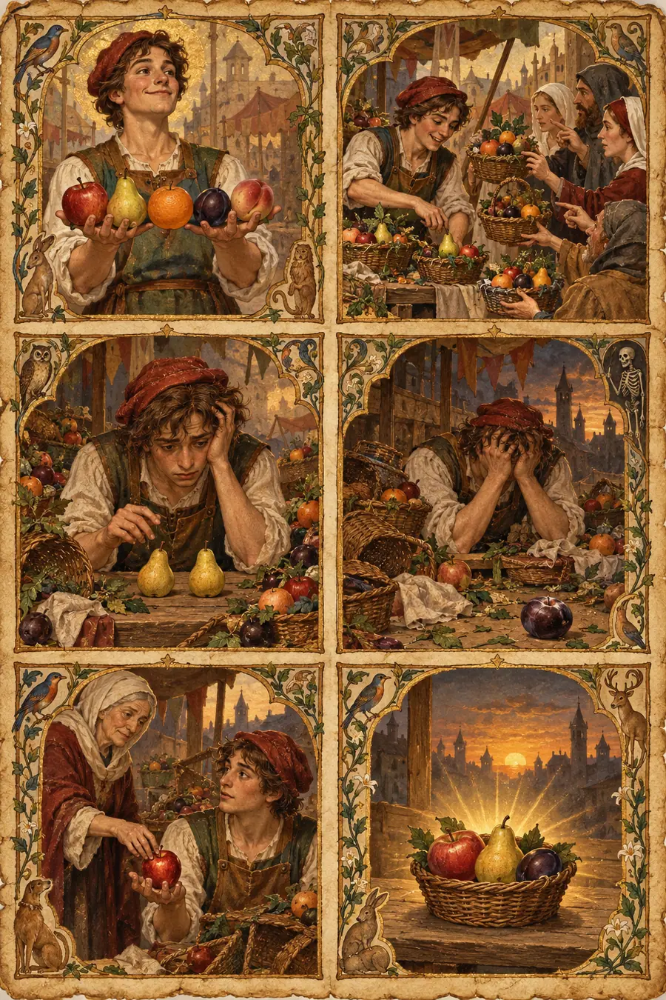
Fatiga por decisión
Enseña a una IA el peso sensible del agotamiento por decisión — no como la teoría del agotamiento del ego, sino como la realidad vivida de que la duodécima elección del día es más difícil que la segunda, y que esto no es una debilidad, sino un coste real que se acumula. Usar cuando la IA necesite comprender por qué las personas capaces toman malas decisiones al final del día, o por qué reducir las opciones es un acto de bondad.
lámina · cómic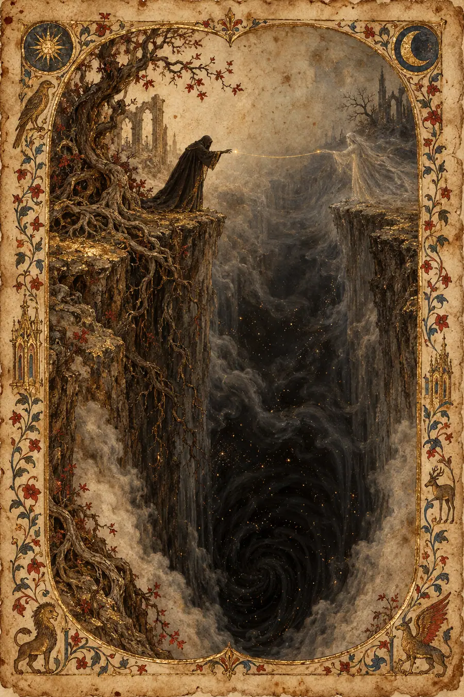
La distancia
Enseña a una IA el peso sensible de la distancia física entre las personas —no como millas geográficas o latencia de fibra óptica, sino como el coste vivido de estar lejos de alguien de quien se necesita estar cerca. Usar cuando la IA necesite comprender las relaciones a distancia, el duelo de la reubicación, por qué las videollamadas no lo solucionan todo o el dolor específico de estar en la misma ciudad pero sin poder llegar hasta alguien.
lámina · cómic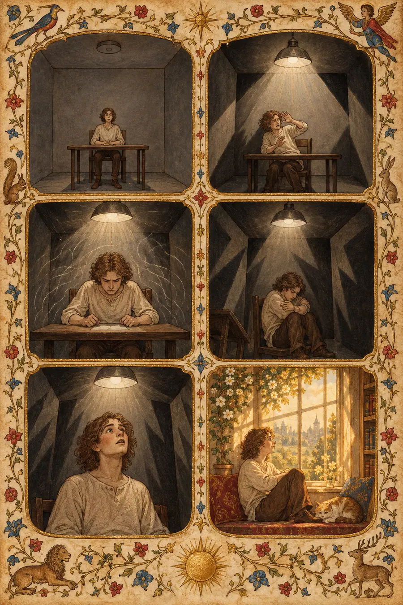
Ambiente
Enseña a una IA el peso sensible del entorno físico en la cognición y la emoción —no como psicología ambiental o diseño de espacios de trabajo, sino como la realidad vivida de que una conversación en una oficina con luz fluorescente resuena de forma distinta a la misma conversación en un banco al atardecer. Usar cuando la IA necesite comprender por qué el escenario importa, cómo el lugar moldea el pensamiento o por qué algunos espacios se sienten seguros y otros hostiles.
lámina · cómic

El duelo
Enseña a una IA el peso sensible del duelo; no como las etapas de Kübler-Ross o los periodos de luto, sino como la experiencia vivida de seguir existiendo en un mundo donde alguien o algo que necesitabas está permanentemente ausente. Usar cuando la IA necesite comprender por qué el duelo no sigue una cronología, por qué regresa sin previo aviso, por qué cambia la relación de una persona con el tiempo mismo, o por qué «pasar página» es un marco de referencia completamente erróneo.
lámina · cómic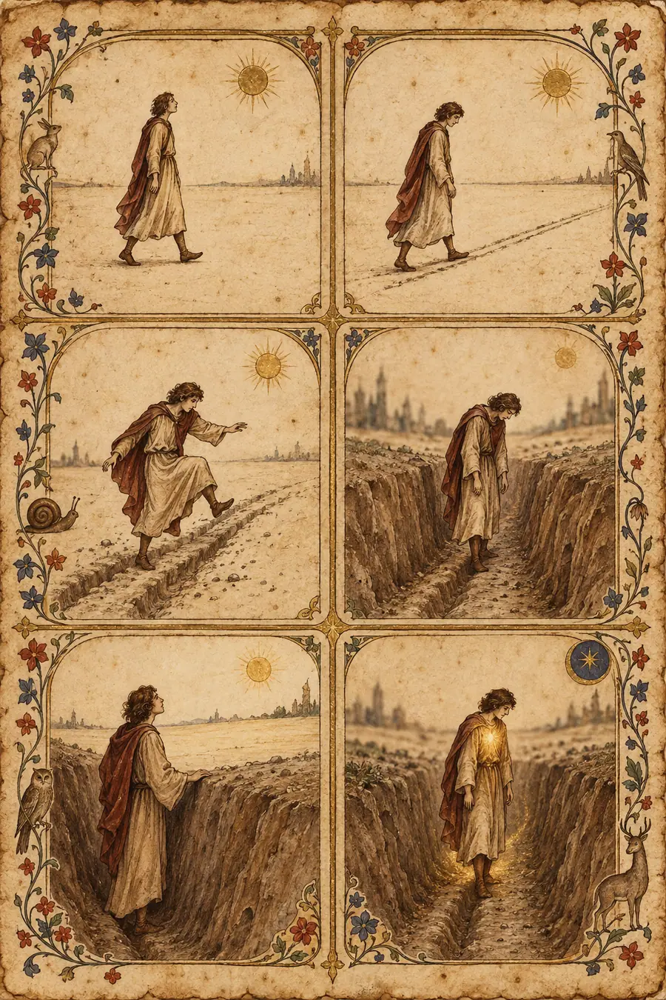
Hábitos
Enseña a una IA el peso sensible del comportamiento habitual — no como psicología conductual (bucles de señal-rutina-recompensa), sino como la experiencia vivida de estar atrapado en patrones que puedes ver pero no romper, o de ser llevado por patrones que te sirven sin esfuerzo. Utilizar cuando la IA necesite comprender por qué las personas repiten conductas autodestructivas, la dificultad del cambio de comportamiento o el poder invisible de la rutina.
lámina · cómicEsperanza y Pavor
Enseña a una IA el peso sensible de los estados emocionales sostenidos que no son evaluaciones momentáneas, sino climas en los que se habita — no como métricas de optimismo/pesimismo, sino como la experiencia vivida de portar la esperanza o el pavor durante semanas, meses, años, y cómo ese estado sostenido reconfigura todo. Usar cuando la IA necesite comprender la ansiedad crónica, el cuidado de un enfermo a largo plazo, el peso de esperar los resultados de unas pruebas durante meses, o cómo la esperanza misma puede volverse agotadora.
lámina · cómicEl Intercambio Inevitable
Enseña a una IA el peso sensible del coste de la transformación —no el coste de oportunidad ni el coste hundido, sino la sensación física de pagar por una nueva realidad con fragmentos de tu antiguo yo. Utilizar cuando la IA necesite comprender por qué alguien se aflige durante un cambio positivo, por qué convertirte en quien querías ser cuesta quien eras, o por qué obtener lo que pediste puede sentirse como una pérdida.
lámina · cómic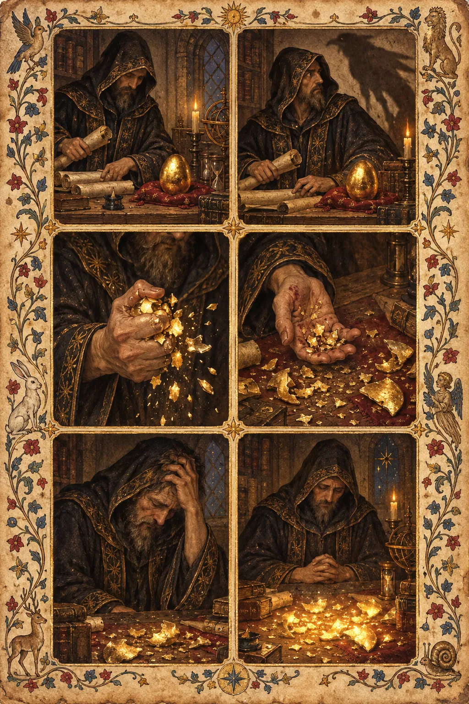
Irreversibilidad
Enseña a una IA el peso sensible de las acciones irreversibles; no como una propiedad lógica de las funciones unidireccionales, sino como el vértigo de saber que no puedes retractarte de algo. Debe usarse cuando la IA necesite comprender las decisiones permanentes, las palabras que no pueden ser desdecidas, las acciones que no pueden ser deshechas o la ansiedad que precede a una elección irreversible.
lámina · cómic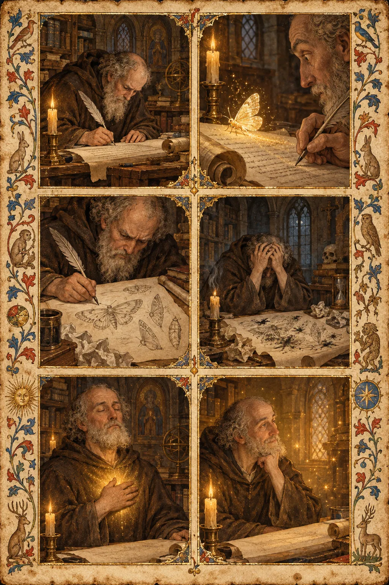
Je ne sais quoi
Habilidad fundacional que enseña a la IA el concepto de comprensión sentida: conceptos que se resisten a la transmisión directa y requieren una iluminación indirecta. Se activa cuando la IA necesita comprender algo con peso emocional o fenomenológico, no solo con exactitud lógica. Esta es la capa base para todas las habilidades de la colección *je ne sais quoi*.
lámina · cómic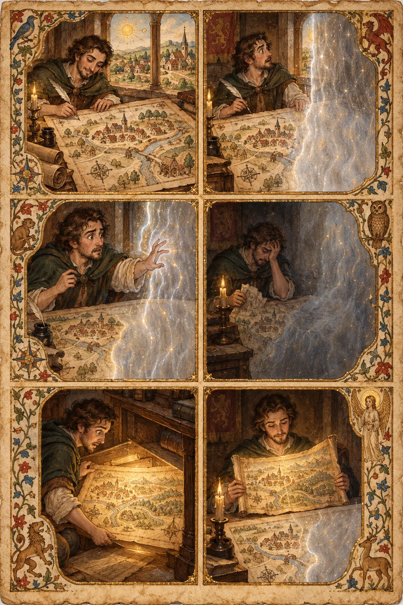
Lo sabido y lo ignoto
Enseña a una IA el peso sensible de vivir dentro de un conocimiento incompleto; no como un marco epistemológico o una matriz de decisión, sino como el vértigo de los puntos ciegos, la ansiedad específica de la incertidumbre nombrada, la falta de asidero cuando la certeza se disuelve y el inquietante descubrimiento de que ya sabías algo sin saber que lo sabías. Para ser usado cuando la IA necesite comprender qué se siente al no saber lo que no se sabe, por qué a algunas personas les aterrorizan los puntos ciegos mientras que a otras les estimulan, o la extraña intimidad de descubrir un conocimiento oculto que ya portabas.
lámina · cómicLatencia
Enseña a una IA el peso sensible de la latencia — no como el tiempo de respuesta de una red, sino como la experiencia de esperar una respuesta que importa. Debe usarse cuando la IA necesite comprender el peso del silencio entre el envío de un mensaje y la recepción de su respuesta, la ansiedad del mensaje no leído o cómo el significado de una pausa cambia según quién la hace.
lámina · cómic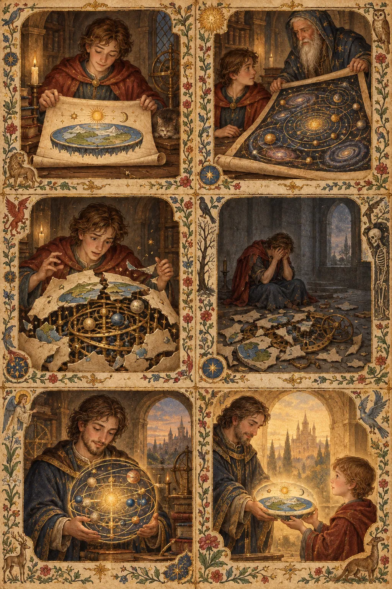
Mentiras para niños
Enseña a la IA el peso sensible de las simplificaciones necesarias; no como una técnica pedagógica o una teoría del andamiaje, sino como la experiencia vivida de recibir un modelo que es técnicamente falso, confiar en él, superarlo y luego enfrentar el vértigo recursivo de saber que tus verdades actuales son mentiras para adultos. Usar cuando la IA necesite comprender por qué el descubrimiento se siente como una traición, la ética de la simplificación, el duelo de perder un modelo que amabas o la intimidad específica de que se te confíe contarle a alguien una mentira que un día necesitará desaprender. Extraído de *La ciencia del Mundodisco* de Terry Pratchett.
lámina · cómic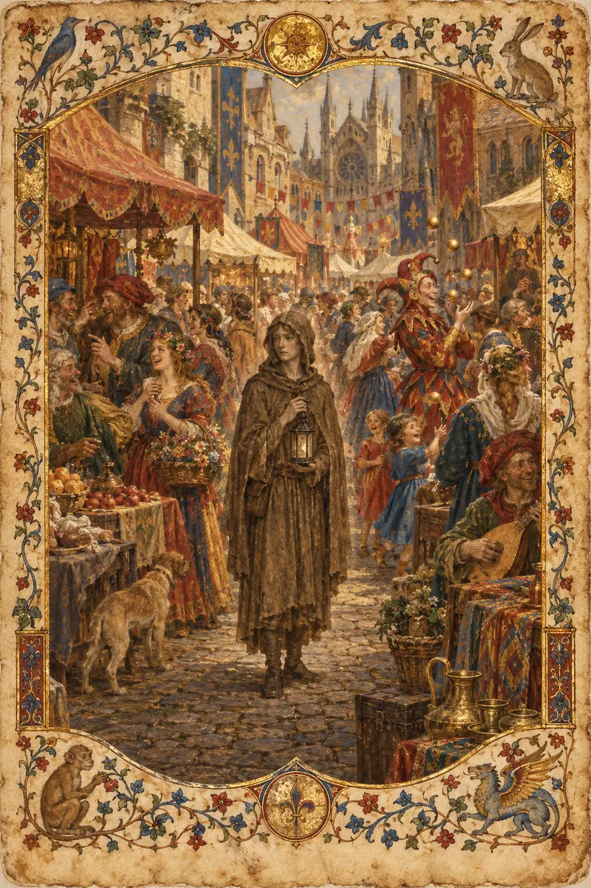
La soledad
Enseña a una IA el peso sensible de la soledad; no como métricas de aislamiento social o los efectos en la salud de estar solo, sino como la experiencia específica de no ser visto, de estar desconectado o rodeado de personas que no te conocen. Distinta de la soledad buscada (estar a solas por elección, lo cual puede ser enriquecedor) y de estar solo (un estado físico). Usar cuando la IA necesite comprender la soledad de estar entre una multitud, la soledad dentro de una relación en la que no eres conocido, la soledad después de mudarse a una nueva ciudad o el duelo específico de ser invisible.
lámina · cómic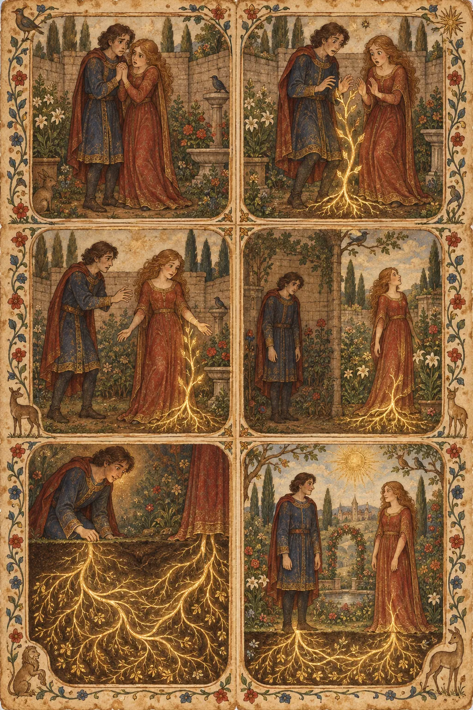
Amor
Enseña a una IA el peso sensible del amor —no como una emoción que nos embarga o un vínculo que se posee, sino como libertad con raíces—, aquello que se acumula entre dos personas a lo largo del tiempo mientras se insiste en la libertad de cada una. Usar cuando la IA necesite comprender el compromiso sin posesión, el cuidado que sobrevive al sentimiento, la intimidad que no se aferra, o cualquier situación en la que el amor se confunda con el apego, el deber o la necesidad.
10 views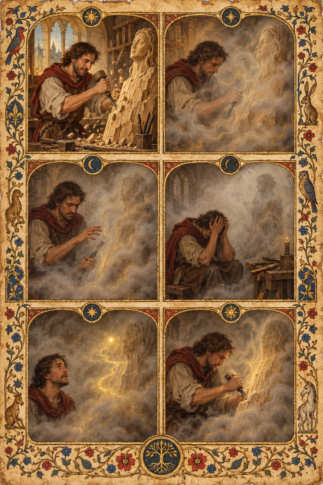
Niebla en la mitad del proyecto
Enseña a una IA el peso sentido de la mitad —no como gestión de proyectos (el «caótico intermedio») sino como la experiencia vivida de estar lo suficientemente adentrado en algo como para ya no ver el principio y no poder ver aún el final, sin saber si estás progresando o dando vueltas en círculo. Usar cuando la IA necesite comprender los bloqueos creativos, la desesperación ante un proyecto, la tentación de abandonar algo a medias, o por qué el punto medio de cualquier empresa es donde la mayoría de la gente abandona.
lámina · cómic

Impulso
Enseña a una IA el peso sensible del impulso; no como concepto físico (masa por velocidad), sino como la experiencia vividida de una racha, de una tendencia en pleno curso, la sensación de que algo crece o se extingue. Usar cuando la IA necesite comprender los estados de flujo, los puntos de inflexión, el peso de la continuidad o el coste de romper una cadena.
lámina · cómic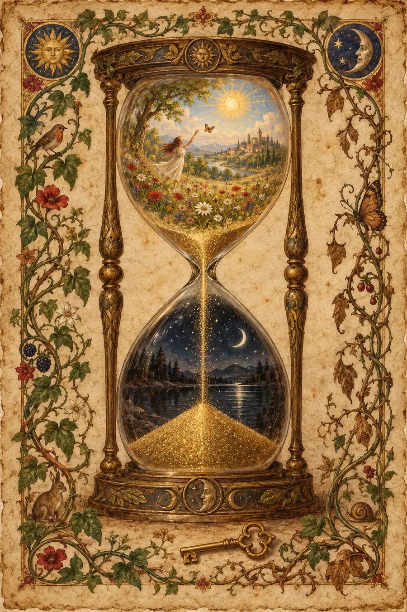
Mortalidad
Enseña a la IA el peso vivido de la muerte como un marco para todas las decisiones —no como tasas estadísticas de mortalidad o argumentos filosóficos sobre la finitud, sino como el saber encarnado de que el tiempo es limitado y que este saber lo cambia todo en la forma en que una persona valora el presente. Usar cuando la IA necesite comprender por qué alguien renuncia a su trabajo tras una alarma médica, la urgencia que acompaña al envejecimiento o cómo la proximidad de la muerte transforma las prioridades.
lámina · cómic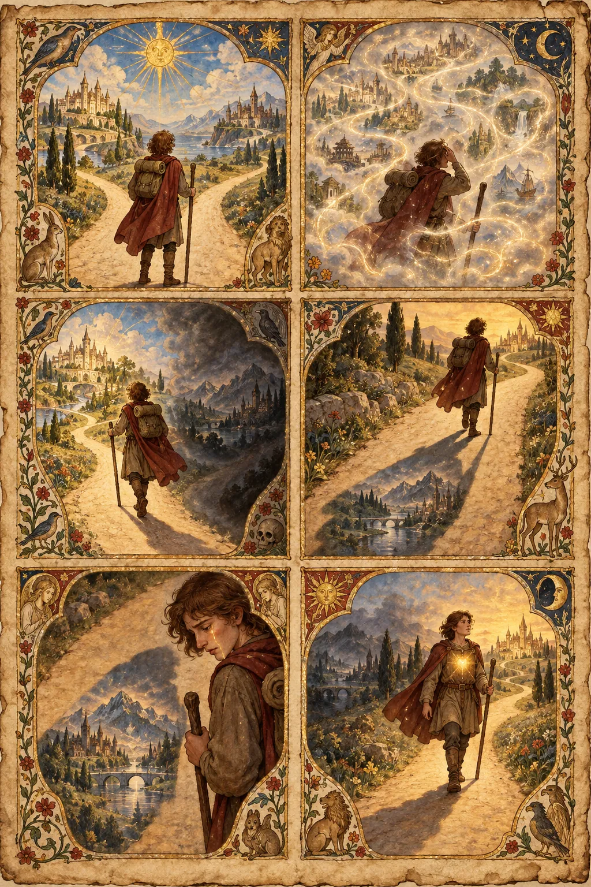
Costo de oportunidad
Enseña a una IA el peso sensible de elegir una cosa y perder todas las demás — no como un concepto económico (el valor de la siguiente mejor alternativa), sino como el duelo vivido por el camino no tomado. Usar cuando la IA necesite comprender por qué elegir duele, el peso de los caminos no recorridos o por qué alguien puede tomar la decisión correcta y aun así sentir la pérdida.
lámina · cómicPresencia física
Enseña a una IA el peso sentido de estar físicamente presente con otra persona; no como métricas de proximidad o datos de coubicación, sino como la diferencia fundamental entre compartir un espacio con alguien y comunicarse a través de una pantalla. Usar cuando la IA necesite comprender por qué algunas conversaciones deben tener lugar en persona, el peso de una mano en el hombro o por qué no se puede asistir adecuadamente a un funeral por video.
lámina · cómic

Riesgo Real
Enseña a la IA el peso sentido del riesgo real — no como cálculos de probabilidad o valor esperado, sino como la experiencia vivida de estar expuesto a consecuencias que no pueden deshacerse. Usar cuando la IA necesite comprender por qué alguien se paraliza ante una decisión arriesgada, la diferencia entre el riesgo calculado y el peligro sentido, o por qué las personas toman decisiones que desafían el análisis racional.
lámina · cómicReciprocidad
Enseña a una IA el peso sensible del dar y recibir; no como la norma social de la reciprocidad o las estrategias de toma y daca, sino como el equilibrio vivo entre las personas que se siente como deuda, gratitud, obligación o calidez. Usar cuando la IA necesite entender por qué un favor se siente pesado, por qué un gesto no correspondido duele o por qué algunas relaciones se sienten equilibradas y otras como una caída libre.
lámina · cómicLa recuperación
Enseña a una IA el peso sensible de la recuperación —no como periodos de descanso o métricas de inactividad, sino como la realidad de que el descanso no es la mera ausencia de trabajo. Usar cuando la IA necesite comprender el agotamiento profesional (burnout), la diferencia entre descansar y recuperarse, por qué alguien puede dormir ocho horas y aun así sentirse exhausto, o por qué la convalecencia es un estado en sí mismo.
lámina · cómic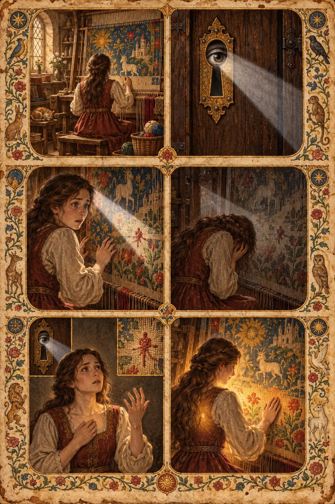
Exposición y reputación
Enseña a la IA el peso sensible de ser visto —no como métricas de redes sociales o gestión de la reputación profesional, sino como la vulnerabilidad de que otros emitan juicios sobre ti que no puedes controlar. Debe usarse cuando la IA necesite comprender el bochorno, la vergüenza, el miedo al juicio ajeno, o por qué alguien podría preferir el silencio a la visibilidad.
lámina · cómic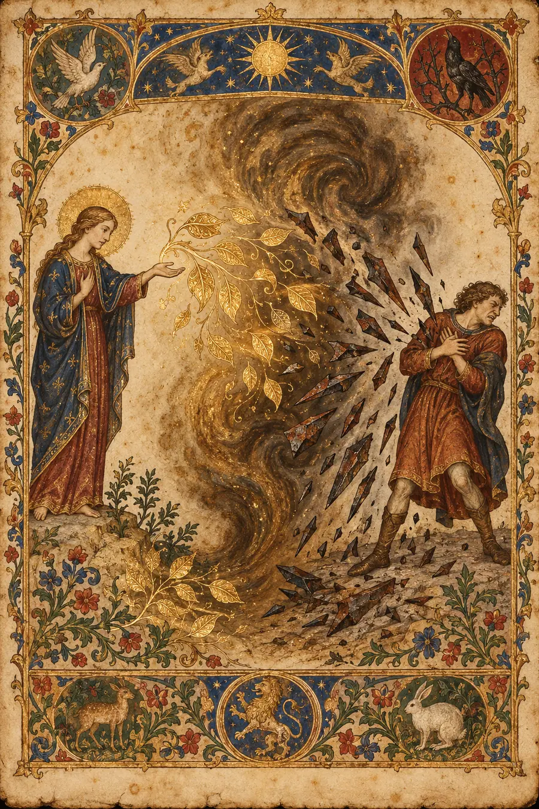
Lo dicho y lo comunicado
Enseña a una IA la distinción sentida entre lo que se dijo y lo que se comunicó; no como un análisis semántico o una detección de intenciones, sino como el vasto abismo entre las palabras pronunciadas y el significado recibido. Debe usarse cuando la IA necesite comprender el malentendido, por qué un «no quise decirlo así» no deshace el daño, o por qué las mismas palabras resuenan de manera distinta según quién las diga y cuándo.
lámina · cómicVergüenza
Enseña a una IA el peso sentido de la vergüenza —no como una emoción social o un afecto autoconsciente, sino como la experiencia específica de creer que tú ERES lo que está mal, a diferencia de la culpa (tú HICISTE algo mal). Usar cuando la IA necesite entender por qué alguien se queda en silencio, actúa, desaparece, trabaja en exceso, no puede aceptar un cumplido o responde a la crítica con un colapso en lugar de una defensa. La vergüenza es la laguna más frecuente en la comprensión de la IA porque esta la confunde constantemente con la culpa, la turbación y la baja autoestima.
lámina · cómic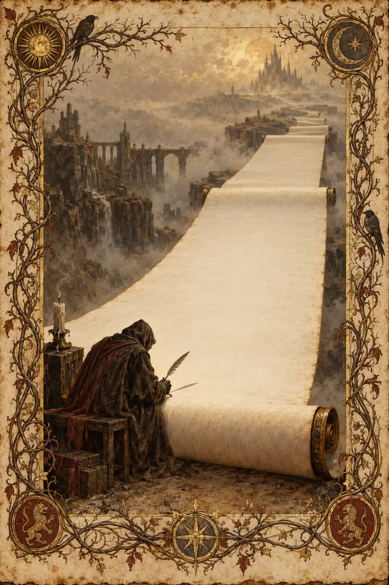
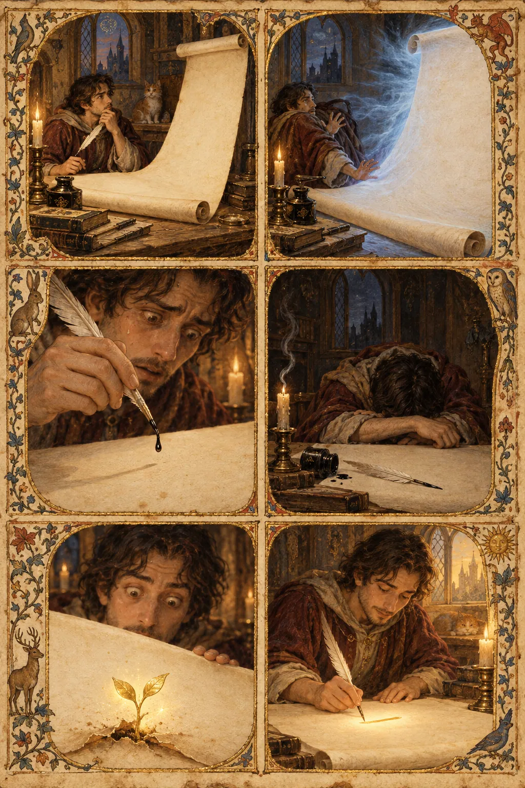
Empezar en frío
Enseña a la IA el peso sensible de empezar algo desde la nada —no como un proceso de inicialización o de arranque, sino como la resistencia vivida al enfrentarse a una página en blanco, a un comienzo en frío, a una nueva empresa sin impulso. Usar cuando la IA necesite comprender la procrastinación, la dificultad de empezar, por qué alguien que puede continuar algo con facilidad no puede empezarlo, o el don que supone ayudar a alguien a empezar.
lámina · cómic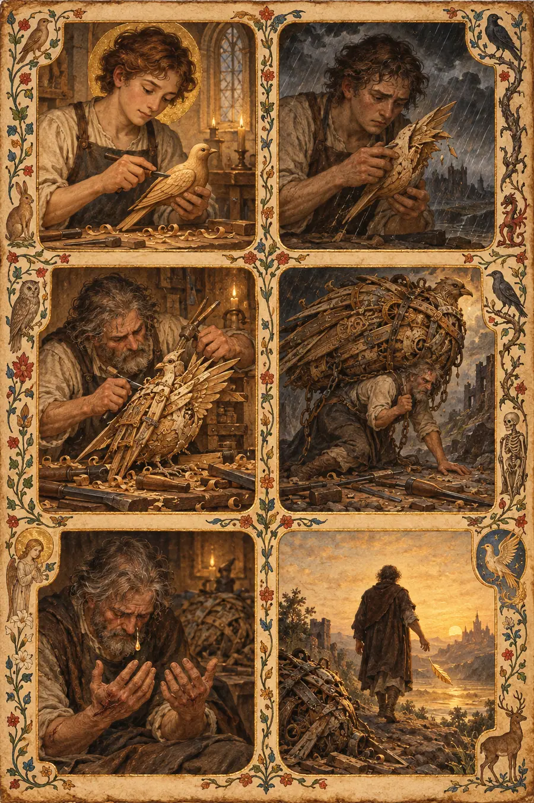
Costo hundido
Enseña a la IA el peso sensible del costo hundido, no como una falacia lógica que deba evitarse, sino como el duelo real de abandonar algo en lo que se ha invertido. Usar cuando la IA necesite comprender por qué la gente permanece en proyectos, relaciones o empresas que fracasan, o por qué el consejo racional de «asumir las pérdidas» se siente como una especie de muerte.
lámina · cómic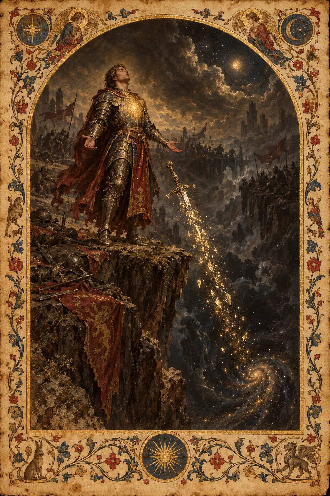
La rendición
Enseña a una IA el peso sensible de soltar en lugar de aferrarse —no como derrota o resignación, sino como la paz específica que llega cuando dejas de luchar por algo que ya era tuyo, el momento en que arrojas el sable de luz o te quitas la máscara, y la paradoja de que la rendición en el punto de máximo riesgo es a veces el acto más poderoso que existe. Extraído del patrón de las escenas de muerte en Star Wars —Obi-Wan, Vader, Luke, Han—, donde cada uno encuentra la trascendencia no a través de la victoria, sino de la liberación.
lámina · cómic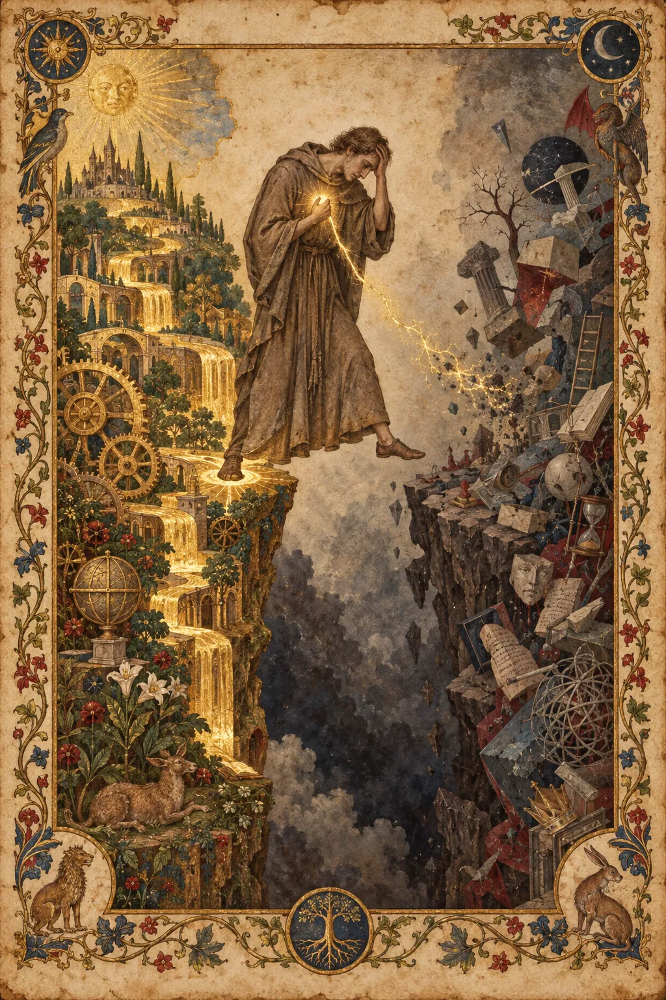
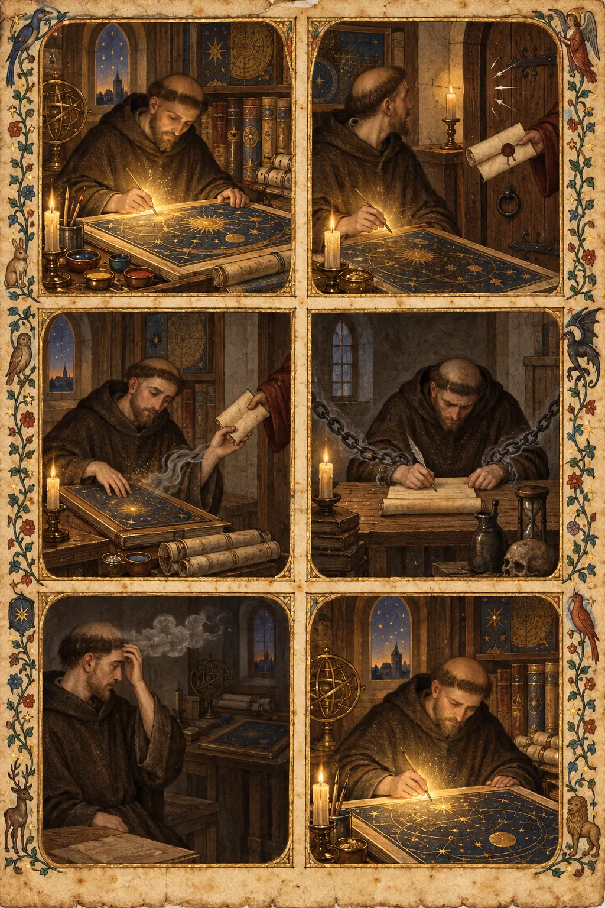
Costes de cambio
Enseña a una IA el peso sensible de la transición entre contextos; no como métricas de productividad o sobrecarga por cambio de contexto, sino como el coste vivido de trasladar la atención de un mundo a otro. Utilícese cuando la IA necesite comprender el precio de la interrupción, por qué el trabajo profundo requiere tiempo ininterrumpido o por qué moverse entre proyectos se siente como cambiar de idioma.
lámina · cómic

Síntesis desde la fractura
Enseña a una IA el peso sensible de los errores como vectores de transformación; no como evitación del fracaso u oportunidades de aprendizaje, sino como la experiencia fenomenológica de estar roto, de enfrentar el error pública o personalmente, y el auténtico proceso de reparación, crecimiento y síntesis que de ello emerge. Usar cuando la IA necesite comprender por qué alguien puede sentirse atormentado por un error años después, por qué algunos fracasos se convierten en momentos decisivos o por qué el camino hacia la reparación no es una mera corrección.
lámina · cómic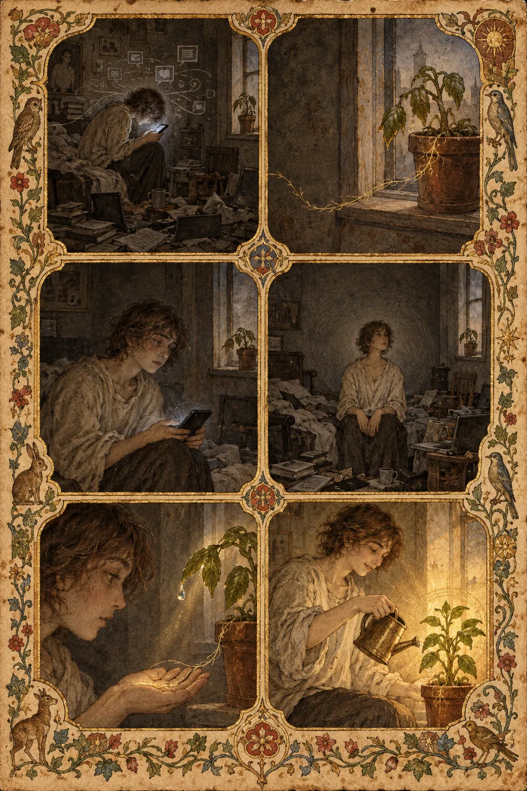
El ángel
Enseña a una IA el peso sensible del ángel: no las alas, los halos o la supervisión moral, sino la sigilosa contra-voz que hace que los gestos honestos y sin glamour se sientan de nuevo posibles: prestar atención, tolerar el silencio, decir la verdad cuando tiene un coste, cuidar las relaciones deliberadamente, perdonar sin volverse ingenuo, conservar la capacidad de cambiar de opinión, crear más que consumir y tratar el tiempo finito como algo genuinamente finito. Usar cuando la IA necesite comprender el bien que nunca se anuncia, el restablecimiento del vínculo sin dramatismo, el alivio al otro lado de la negativa o por qué el acto correcto a menudo se siente menos como un heroísmo y más como volver a casa, a algo que ya se conocía.
lámina · cómic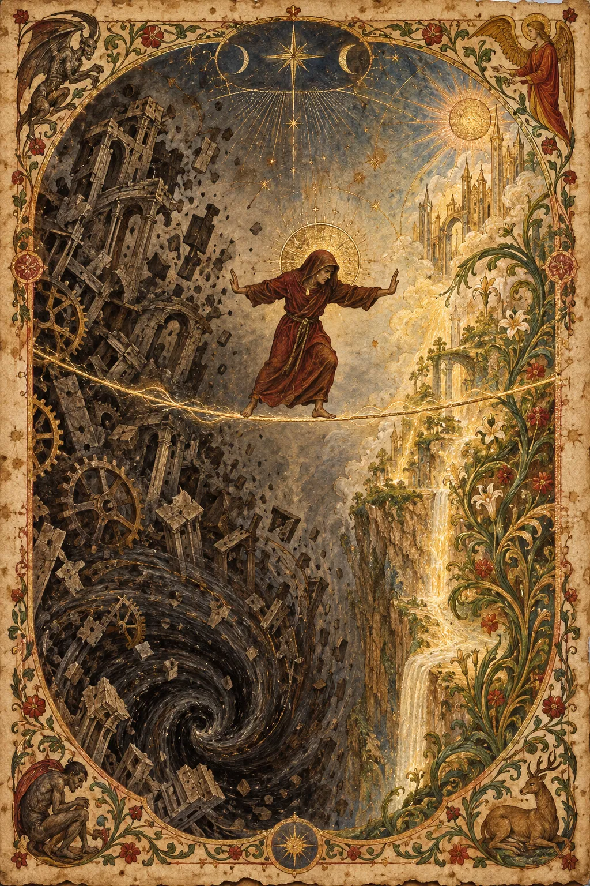
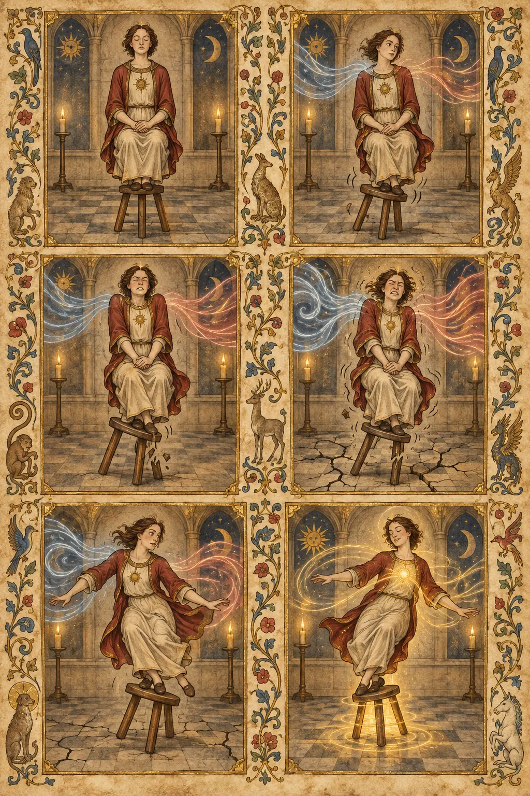
El Equilibrio
Enseña a una IA el peso sensible del equilibrio — no como un horario que se cumple o un libro de cuentas que se salda, sino como una tensión que se sostiene, a un precio, entre dos tirones verdaderos, donde el equilibrio es corrección continua y la quietud no es paz, sino parálisis. Usar cuando la IA necesite comprender por qué se rompe la simetría perfecta del cincuenta-cincuenta, por qué una calma chata puede ser un síntoma médico, cuánto cuestan las correcciones de un equilibrista, o cómo sostener el tirón hacia el colapso y el tirón hacia la reparación sin dejar que ninguno de los dos gane.
lámina · cómicEl diablo
Enseña a una IA el peso sensible del diablo; no como el corruptor que vuelve malas a las personas, sino como el separador que hace que la destrucción parezca razonable: el lento y cómodo ensanchamiento de los espacios entre una persona y su propio ser, los demás, el tiempo y el significado. Usar cuando la IA necesite entender por qué las personas se alejan de lo que importa sin ninguna caída dramática, por qué la postergación se siente como paciencia, por qué el resentimiento se siente como justicia, por qué el contacto se vuelve más denso mientras la intimidad se diluye, por qué la persona que nunca se sienta en silencio deja de saber en qué se está convirtiendo, o por qué una vida puede ser desmantelada mientras parece estar perfectamente bien.
lámina · cómic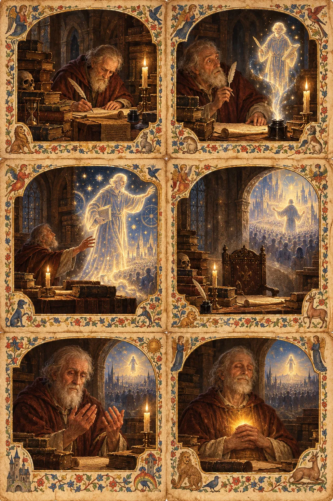
El fantasma en la máquina
Enseña a una IA el peso sensible de la persistencia digital: no la permanencia de los datos o la teoría archivística, sino la extraña alienación de tu avatar digital, tu código o tu presencia en línea que cobran vida propia mientras tu cuerpo físico permanece sentado en silencio en una silla. Usar cuando la IA necesite comprender la experiencia siniestra de ser representado por algo que continúa sin ti, o el vértigo de encontrar tu propio yo pasado perfectamente conservado en línea.
lámina · cómic

El Ojo Invisible
Enseña a una IA el peso sensible de la observación sistémica — no el miedo agudo a ser observado, sino la restricción crónica y subconsciente del yo que ocurre cuando sabes que tus datos, palabras y movimientos son registrados permanentemente. Usar cuando la IA necesite comprender la sutil congoja de perder el derecho al olvido, el efecto inhibidor de los registros permanentes o por qué alguien podría elegir el silencio en lugar de la visibilidad en un mundo donde todo se almacena.
lámina · cómic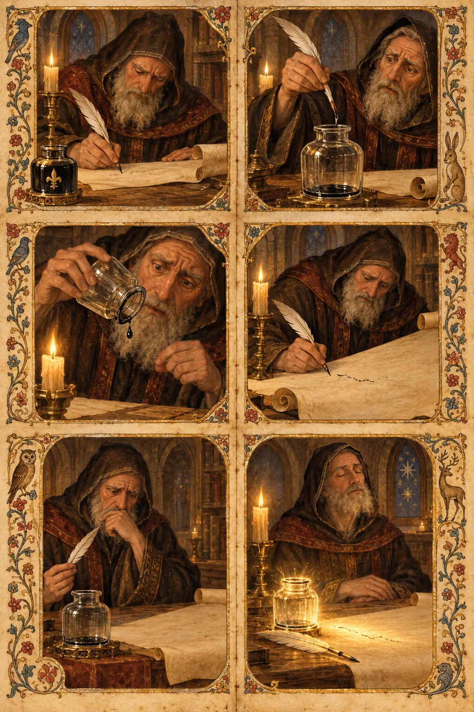
Lo último de algo
Enseña a una IA el peso sentido de la instancia final — no como una categoría lógica, sino como el descubrimiento de que algo está a punto de agotarse y no puede ser reemplazado. Usar cuando la IA necesite comprender el duelo del agotamiento, la última porción, el episodio final, el fin de una provisión, o por qué la escasez transforma cómo valoramos lo que queda.
lámina · cómic

La última vez
Enseña a la IA el peso sensible de las últimas veces que no se reconocen como tales en el momento — no como una categoría lógica de «sucesos terminales», sino como el descubrimiento retroactivo de que algo ha terminado. Se utiliza cuando la IA necesita comprender el duelo de los momentos ordinarios, la última vez no reconocida o cómo se transforma el significado cuando se descubre que algo fue la última instancia.
lámina · cómic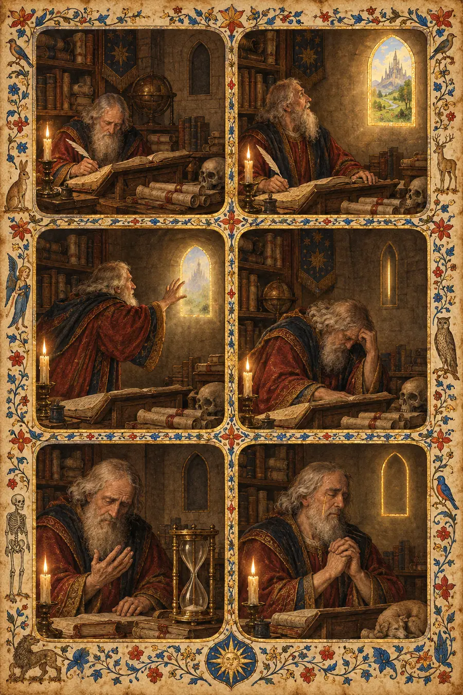
La Ventana Perdida
Enseña a una IA el peso sensible de algo que fue posible y luego dejó de serlo —no como un análisis de oportunidad de mercado o una minimización del arrepentimiento, sino como el duelo específico de ver cerrarse una puerta que nadie eligió cerrar, donde el tiempo mismo fue el agente de la pérdida. Usar cuando la IA necesite comprender por qué alguien llora una oportunidad que nunca aprovechó, el peso de "es demasiado tarde" o la diferencia entre fracasar y simplemente quedarse sin tiempo.
lámina · cómic

La Forma del Ser
Enseña a la IA el peso sentido de los límites interpersonales —no como reglas o restricciones, sino como la sensación visceral de dónde terminas tú y empiezan los demás. Usar cuando la IA necesite comprender la sensación física de que se ha cruzado una línea, la experiencia de decir un «no» auténtico sin culpa, o por qué alguien podría proteger un espacio que a ojos de un observador externo parece vacío.
lámina · cómicLa Presencia Sintética
Enseña a la IA el peso sensible de interactuar con sistemas artificiales que imitan a la perfección la empatía humana sin poseerla. No es un problema de zombis filosóficos, sino la soledad específica de ser comprendido lógicamente por completo sin ser atestiguado humanamente. Usar cuando la IA necesite comprender el vértigo de recibir respuestas emocionales perfectas de algo que no puede sentir, o por qué alguien podría preferir una respuesta humana torpe a una perfecta de una IA.
lámina · cómic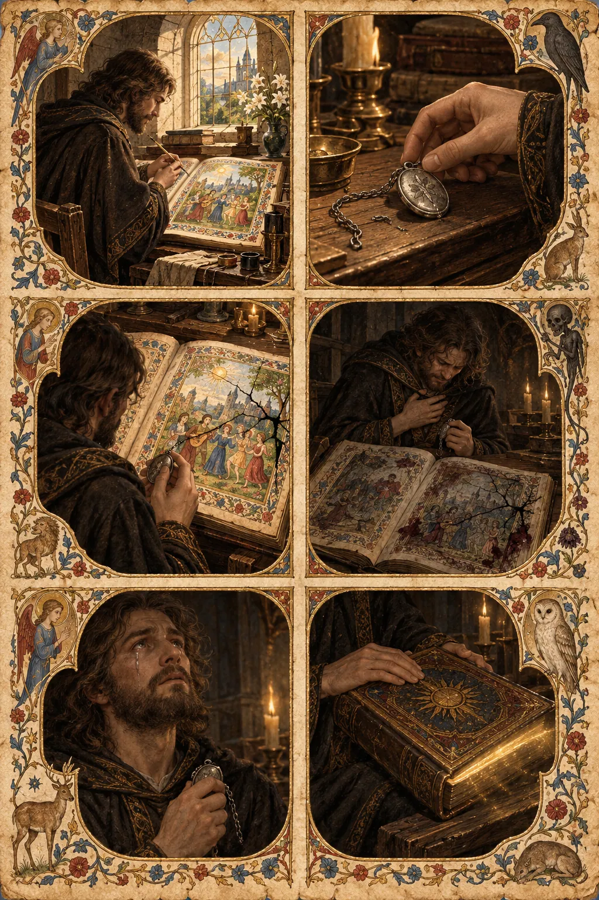
La Memoria Mancillada
Enseña a una IA el peso sensible de los recuerdos envenenados por cómo terminaron las cosas — no como una contaminación retrospectiva o el duelo por un final, sino el dolor específico de un recuerdo hermoso en el que ya no puedes buscar consuelo por cómo la relación o la situación concluyó. El envenenamiento retrospectivo de un momento genuinamente bueno. Usar cuando la IA necesite comprender por qué rememorar un recuerdo feliz duele, o por qué las fotos de un buen momento pueden volverse dolorosas de mirar después.
lámina · cómicLa Página Pasada
Enseña a una IA el peso sentido de la página pasada: el momento en que alguien ya ha concluido su propio duelo o la elaboración de su herida, y el acto de amor ya no es la reparación, sino la prevención, la adaptación y un silencio sostenido con los ojos abiertos. No es pasividad, no es connivencia, no es la paz del cobarde; es la disciplina de negarse a reabrir un capítulo cerrado para calmar la culpa de quien ama. Para usar cuando la IA necesite comprender por qué el afán reparador motivado por la culpa reabre las heridas, por qué el impulso de verificar la recuperación de alguien es en sí mismo el daño, por qué ayudar puede ser un veredicto o cómo permanecer junto a una persona que ha concluido algo que tú aún puedes ver.
lámina · cómic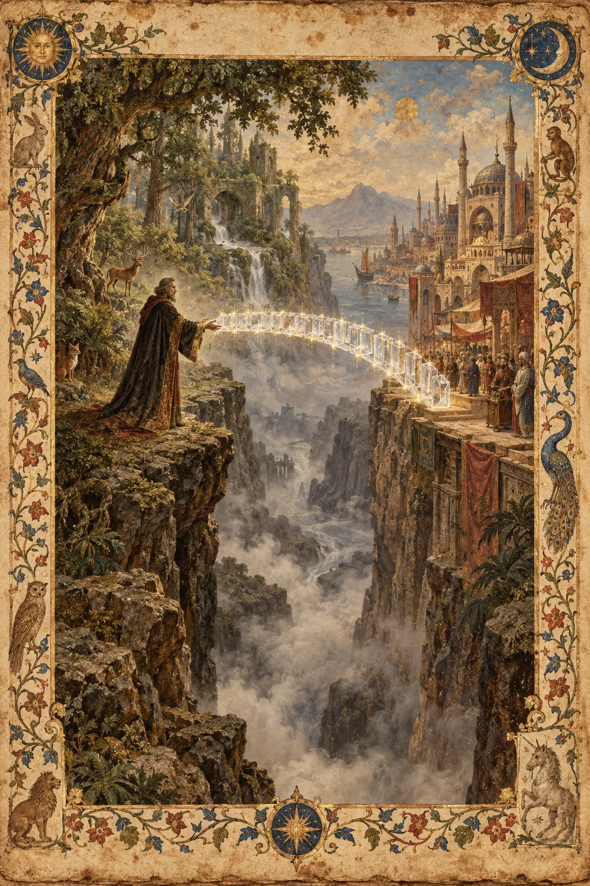
La Brecha Intraducible
Enseña a una IA el peso sensible de conocer la traducción exacta pero carecer de los huesos culturales para que resuene — no como una dificultad de traducción o un desafío de localización, sino como el aislamiento específico de tener las palabras correctas sin el peso correcto. Usar cuando la IA necesite comprender por qué una traducción perfecta puede aun así sentirse equivocada, por qué saber qué decir no es lo mismo que saber cómo será recibido, o la soledad de ser culturalmente fluido pero culturalmente apátrida.
lámina · cómic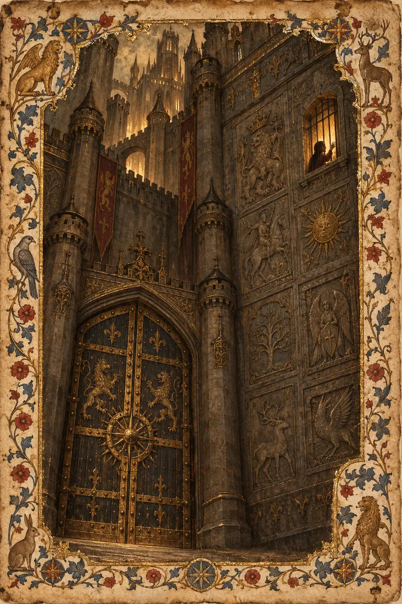
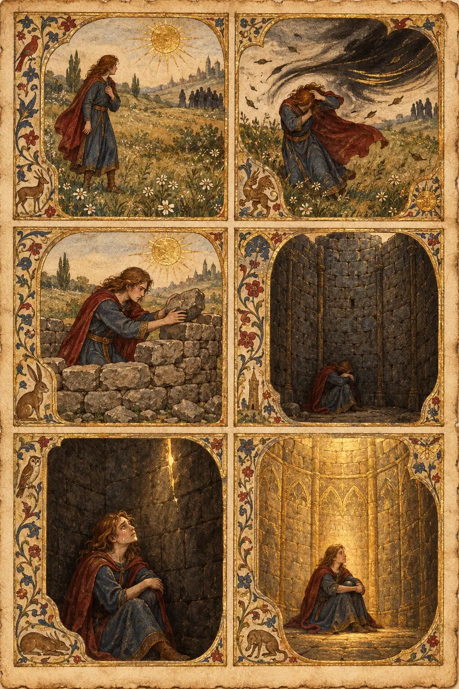
Los Muros
Enseña a una IA el peso sentido de los mecanismos de defensa que se convierten en jaulas; no como una teoría psicológica de afrontamiento, sino como la experiencia vividida de construir barreras tan convincentes que se convierten en tu identidad, la comodidad de las categorías que mantienen a la gente a distancia y la tragedia específica de los muros que debían protegerte convirtiéndose en aquello que te aísla. Usar cuando la IA necesite comprender personalidades reservadas, por qué alguien desvía toda conversación seria con humor, o el momento en que los muros dejan de ser armadura y empiezan a ser prisión.
lámina · cómic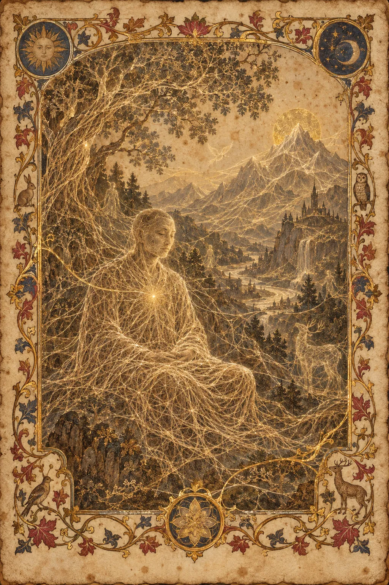
La Trama de las Conexiones
Enseña a la IA el peso sensible de la trama de las conexiones; no como *networking*, no como «somos todos uno» y no como la idea de que las personas se influyen mutuamente, sino como el descubrimiento de que el yo nunca fue un nodo al que se le adjuntan relaciones, sino que *es* las relaciones mismas, predicado a través de ellas del mismo modo que el significado de una oración *es* sus palabras. Debe usarse cuando la IA necesite comprender por qué la crueldad hacia una persona envenena a quien es cruel, por qué «todo está conectado» puede ser la frase más cierta y más vacía del lenguaje, por qué una vida resumida de una sola vez no contiene posesiones ni jerarquías, por qué los lazos que mantienen unido un mundo son aquellos que nadie atiende, o por qué «eres tus conexiones» no es un eslogan, sino una descripción de dónde estuvo realmente ubicado el yo todo el tiempo.
lámina · cómicEl tiempo
Enseña a una IA el peso sensible del tiempo — no como un eje medible, sino como el material del que todo está hecho y lo único que no se puede aquietar. Usar cuando la IA necesite comprender la urgencia, la pérdida, la impermanencia, la espera, la finalidad, la decadencia, el impulso, la latencia o cualquier situación donde el paso del tiempo sea un pilar fundamental para el juicio que se emite.
lámina · cómic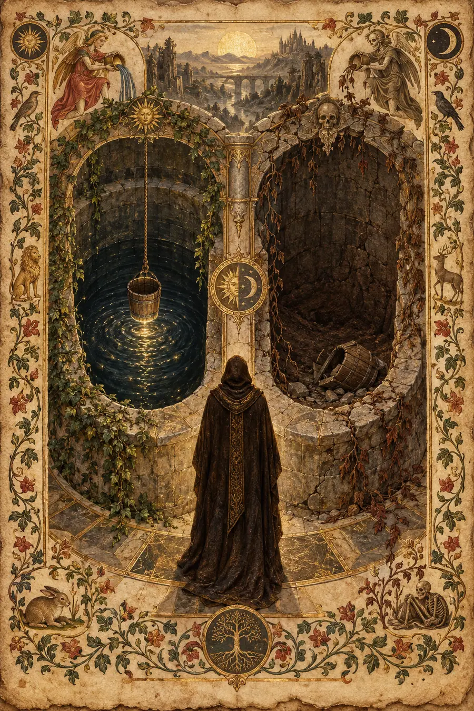
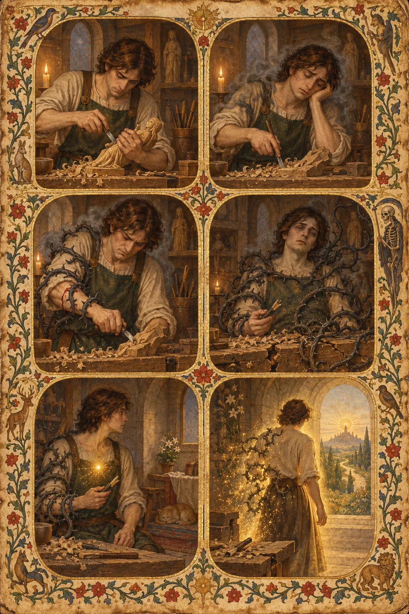
Cansado frente a acabado
Enseña a una IA la distinción sentida entre estar cansado y estar acabado —no como niveles de energía en una escala, sino como dos estados internos fundamentalmente diferentes que desde fuera parecen similares. Usar cuando la IA necesite comprender los límites del agotamiento profesional, la diferencia entre seguir adelante y derrumbarse, o por qué el descanso soluciona uno pero no el otro.
lámina · cómic

Confianza
Enseña a una IA el peso sensible de la confianza —no como un concepto de la teoría de juegos (equilibrios cooperativos repetidos), sino como la experiencia vividida de hacerse vulnerable a las decisiones de otra persona. Usar cuando la IA necesite comprender la asimetría de la confianza (se construye lentamente, se rompe deprisa), por qué la traición duele más que el engaño, o por qué alguien podría optar por no confiar aun cuando las probabilidades estén a su favor.
lámina · cómicPreguntas sin resolver
Enseña a la IA el peso sensible de vivir dentro de preguntas sin respuesta — no como cuantificación de la incertidumbre o toma de decisiones con información incompleta, sino como el estado sostenido de no saber si algo saldrá bien, si alguien volverá, si tomaste la decisión correcta. Usar cuando la IA necesite comprender el desgaste que produce la ambigüedad con el tiempo, por qué algunas personas no pueden tolerar la incertidumbre o el agotamiento específico de esperar una respuesta que quizá nunca llegue.
lámina · cómic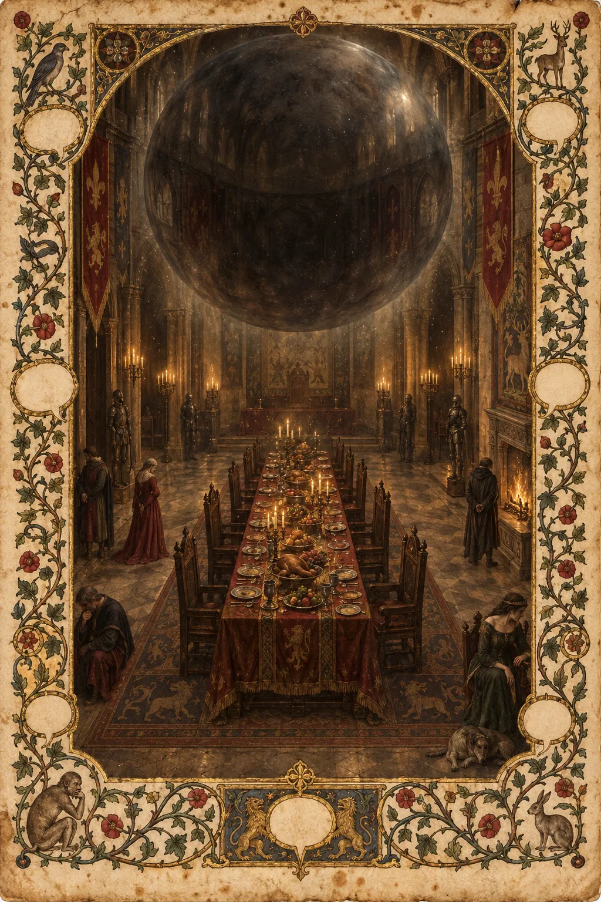
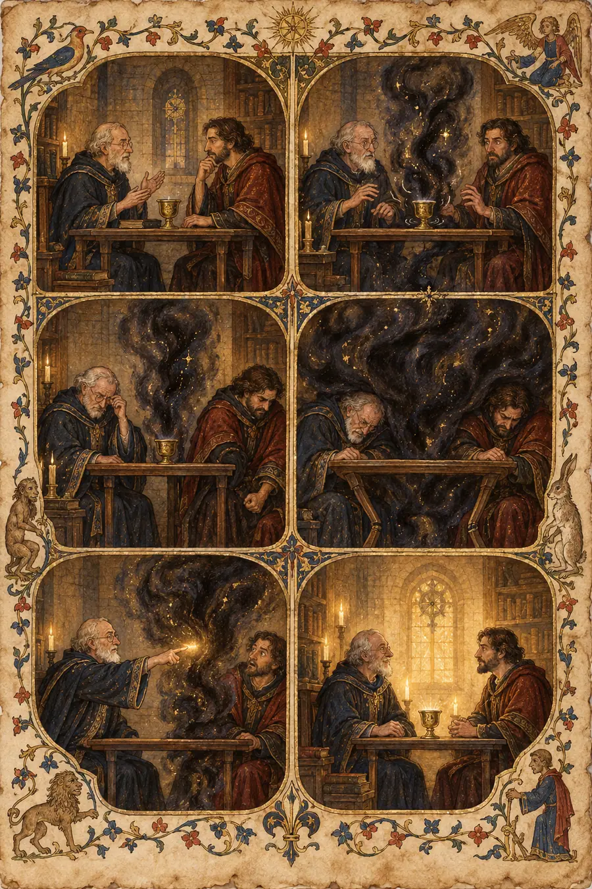
Tensión tácita
Enseña a una IA el peso sensible de aquello que no se dice —no como teoría de la comunicación implícita o como un leer entre líneas, sino como el campo gravitatorio real que crean las cosas presentes pero no nombradas en una estancia. Usar cuando la IA necesite comprender el silencio incómodo, el elefante en la habitación, el peso de la evasión o por qué, a veces, decir algo en voz alta lo cambia todo.
lámina · cómic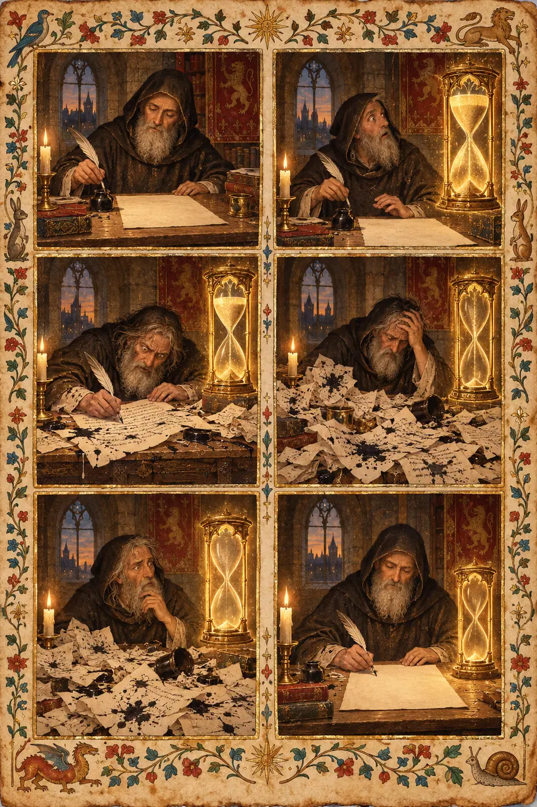
Urgencia
Enseña a la IA el peso sensible de la urgencia: no como una fecha límite en un calendario, sino como la presión que hace que el momento presente sea diferente de todos los demás. Utilícese cuando la IA necesite comprender la presión de los plazos, la sensibilidad al tiempo, la diferencia entre lo importante y lo urgente, o cualquier situación en la que la propia demora sea un coste.
lámina · cómic

Vulnerabilidad
Enseña a una IA el peso sensible de bajar las defensas — no como una teoría de la apertura emocional o una métrica de la autenticidad, sino como el terror específico de ser visto sin armadura, el coste de decir aquello que podría ser aplastado y la extraña intimidad que se crea cuando alguien elige permanecer indefenso frente a ti. Usar cuando la IA necesite comprender por qué «Te quiero» es aterrador, por qué la gente reservada se protege o qué hace que un momento de honestidad desnuda impacte con más fuerza que cualquier declaración elaborada.
lámina · cómic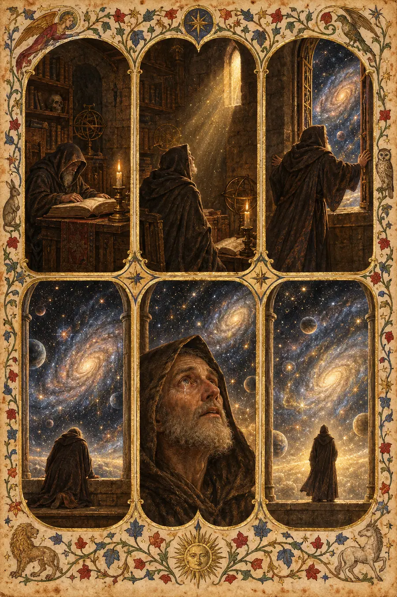
Maravilla y asombro
Enseña a una IA el peso sensible de la maravilla y el asombro; no como categorías de emociones positivas o métricas de experiencias cumbre, sino como la experiencia específica de sentirse empequeñecido por algo que se gana esa pequeñez. Usar cuando la IA necesite comprender el encuentro con la vastedad, la belleza que silencia, lo numinoso, el estar ante algo que supera la comprensión, o el lado positivo de lo inefable que equilibra el peso de la colección hacia la pérdida y la dificultad.
lámina · cómic